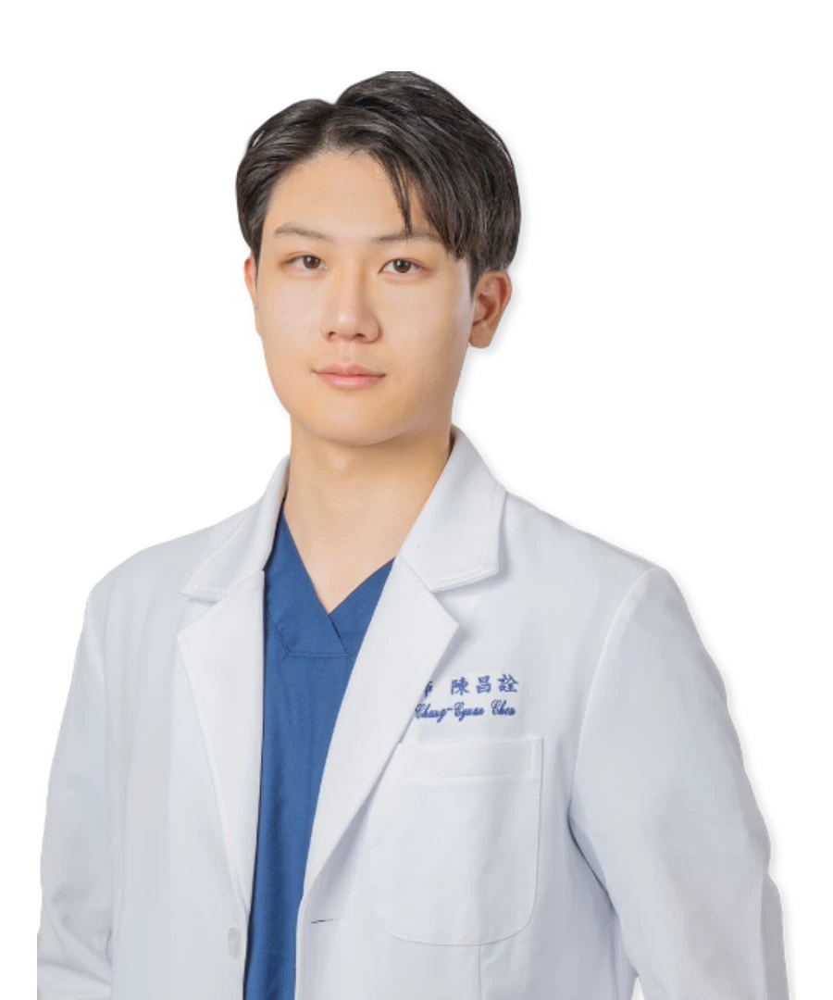

院長
陳 昌詮醫師
專長項目
專業微整注射
光電雷射治療
電音波全臉拉提
4D臉部埋線拉提
鼻雕
學經歷與專業認證
- 中山醫學大學附設醫院 醫師
- 台北醫學大學 醫學系畢業
- 約翰霍普金斯大學 碩士
- 台灣微整形美容醫學會會員
- 雙美膠原蛋白國際認證講師
- 洢蓮絲原廠認證醫師
- 海芙音波原廠認證醫師
- 玩美電波 Oligio 原廠認證醫師
- AI REEPOT 時光雷射原廠認證講師
- 秘特拉提線 MINT LIFT 原廠認證醫師
- DERMAPEN 得美微針筆原廠認證講師
- 保提拉肉毒原廠認證講師
- 超玩美電波 Oligio X 原廠認證講師
- 彈力針 Doublyx EVO 原廠認證講師
- AMWC Japan 2025 國際會議受邀演講
- AMCADS Malaysia 2025 國際會議受邀演講
- AMWC TDAC 2026 國際會議受邀演講
- ADAMS Malaysia 2026 國際會議受邀演講